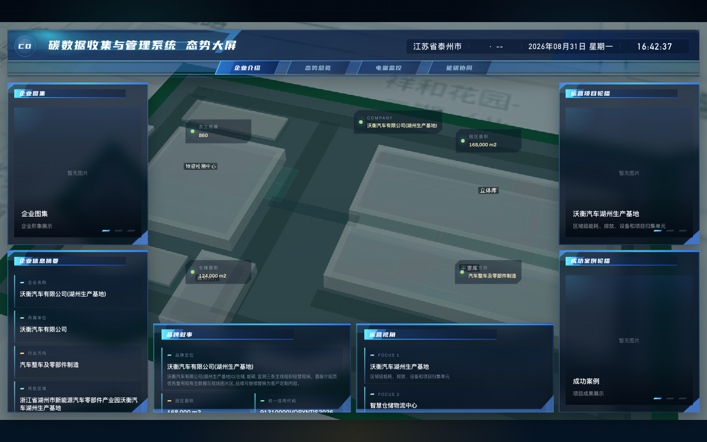
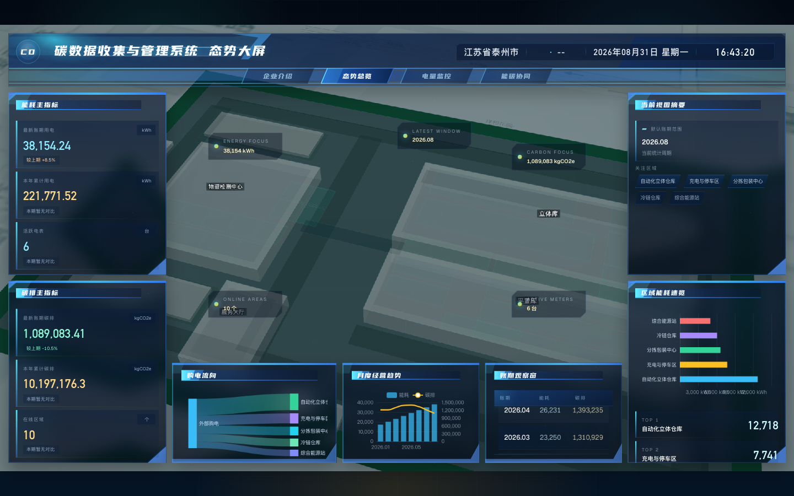
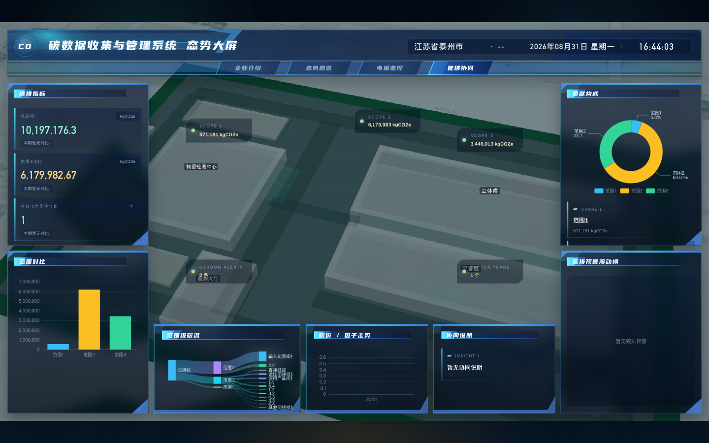
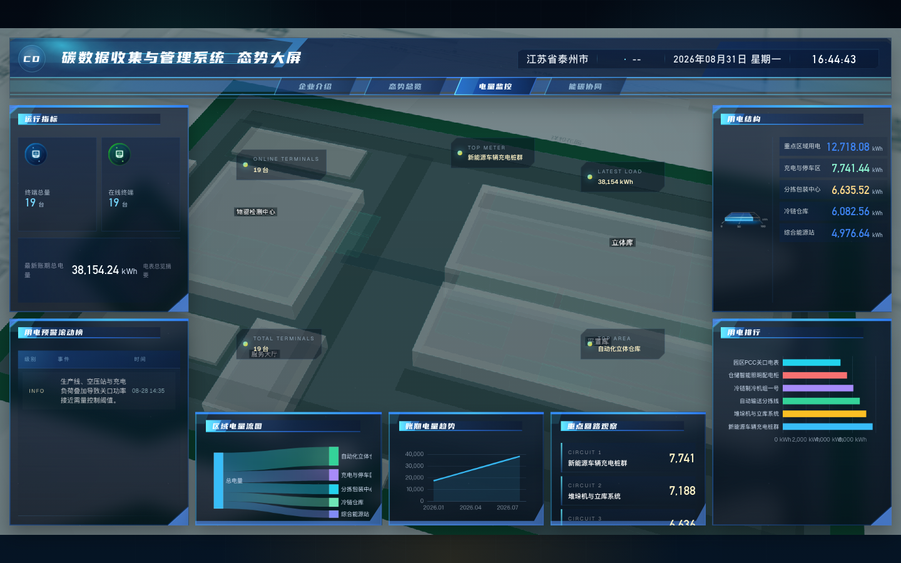

态势大屏
态势大屏用于在会议、汇报和现场展示中说明平台整体建设效果。大屏页面不承担明细录入职责，重点展示能耗、碳排、区域运行和趋势结构。
生产基地介绍大屏
进入 /bigscreen/intro，查看企业信息摘要、基地概况和运营项目轮播。该页面适合作为演示开场，用于说明演示对象和平台覆盖范围。

能碳态势总览
进入 /bigscreen/overview，查看能耗主指标、碳排主指标、月度经营趋势和区域能耗速览。演示时可先说明指标总览，再结合区域用能变化说明平台已接入的监测和统计数据。

碳排专题
进入 /bigscreen/carbon，查看碳排指标、范围对比、贡献构成和碳排预警滚动榜。该页面用于说明 Scope 1、Scope 2、Scope 3 的结构和重点排放来源。

电力专题
进入 /bigscreen/power，查看运行指标、区域电量流图、账期电量趋势和用电排行。该页面用于说明电表采集结果在大屏展示层的应用。

演示检查项
- 图表完全加载后再切换页面或截图。
- 指标卡、趋势图和排行列表应有业务数据。
- 大屏用于概览展示，明细追溯应回到后台管理页面说明。